Element atlas
A field is defined by what you measure.
Explore the spaces, degrees of freedom, and basis functions behind Ferrite's interpolations. A point value, a normal flux, and a circulation integral call for different pictures.
Each family has one representative example. The figures are SVGs generated from this checkout's basis functions, with light and dark variants.
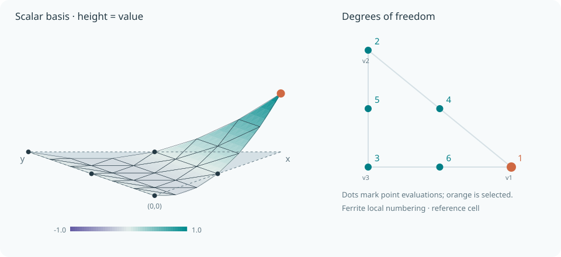
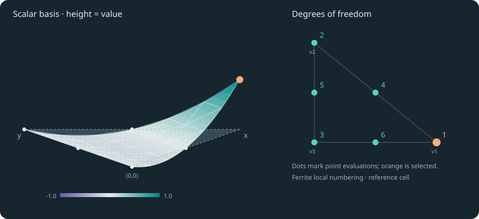
Lagrange
Values at vertices and edge midpoints define a quadratic field.
Lagrange{RefTriangle, 2}()
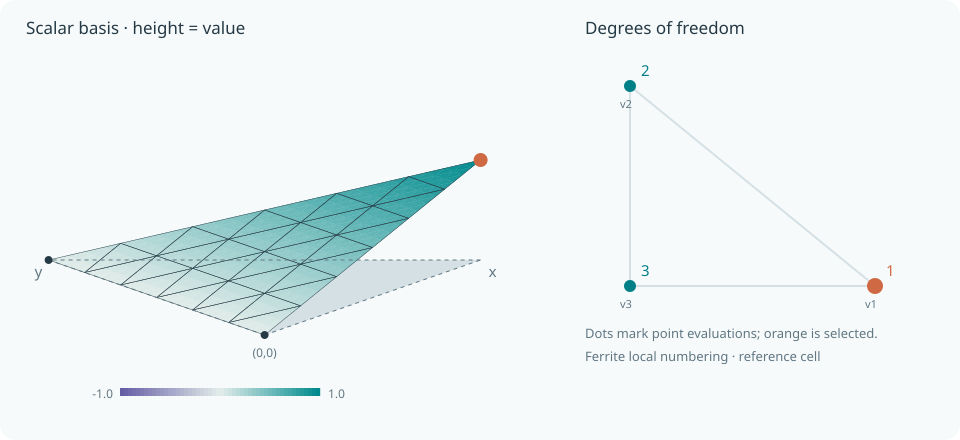
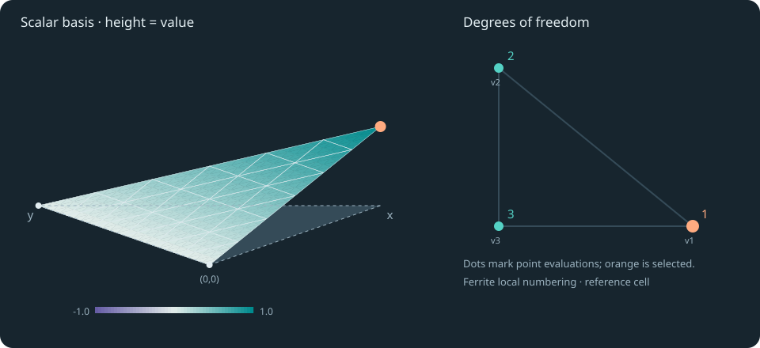
Discontinuous Lagrange
The same local nodal shapes, with independent dofs in each cell.
DiscontinuousLagrange{RefTriangle, 1}()
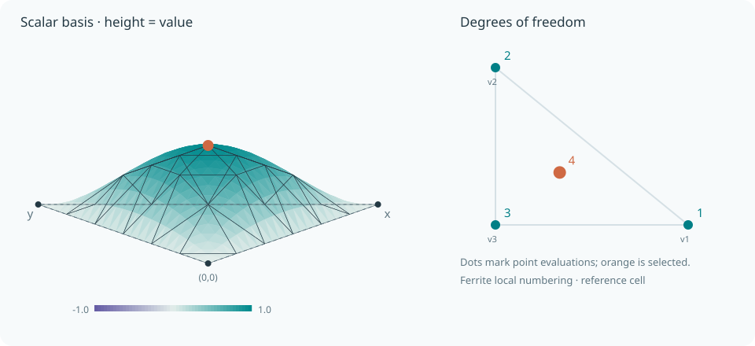
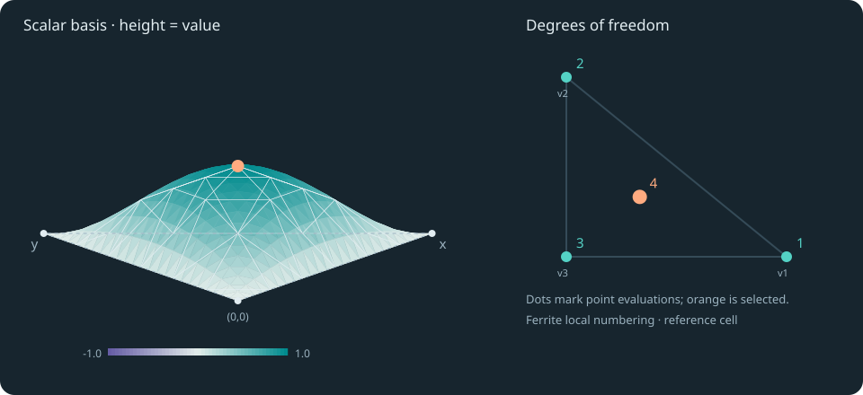
Bubble-enriched Lagrange
Three vertex values and a cell bubble add an interior mode.
BubbleEnrichedLagrange{RefTriangle, 1}()
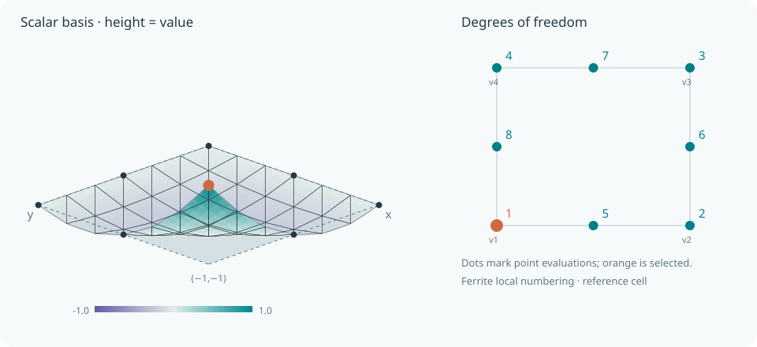
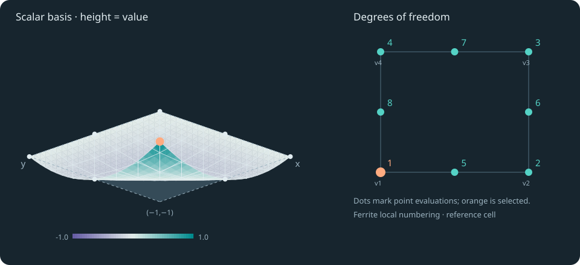
Serendipity
Quadratic edge traces with eight nodes and no centre dof.
Serendipity{RefQuadrilateral, 2}()
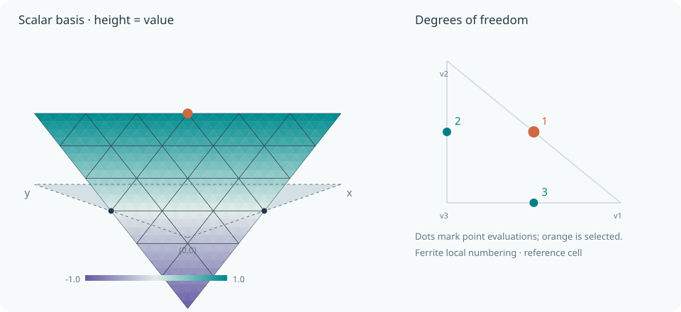
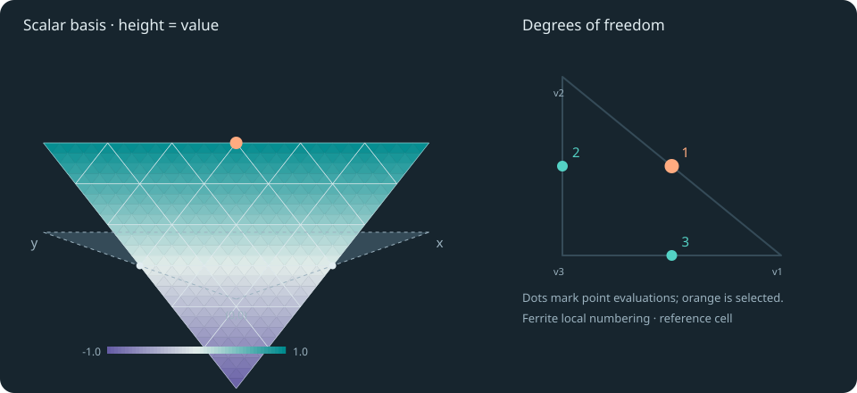
Crouzeix–Raviart
Linear fields joined through edge-midpoint values.
CrouzeixRaviart{RefTriangle, 1}()
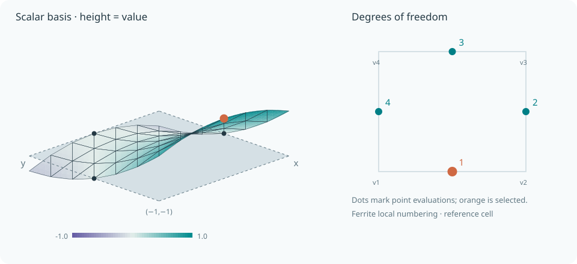
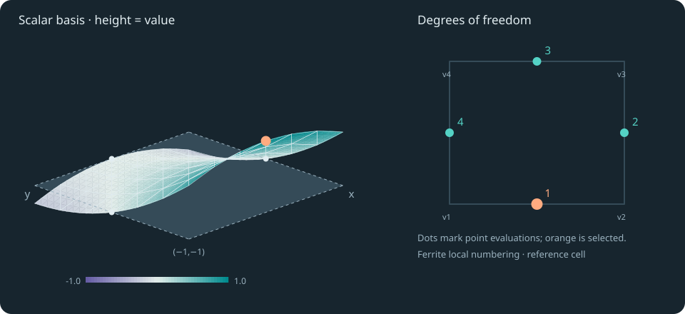
Rannacher–Turek
A rotated quadratic space determined at four edge midpoints.
RannacherTurek{RefQuadrilateral, 1}()
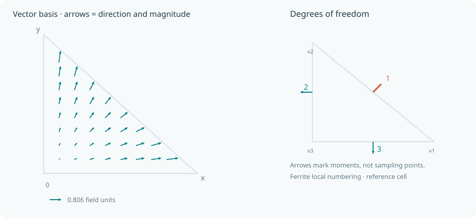
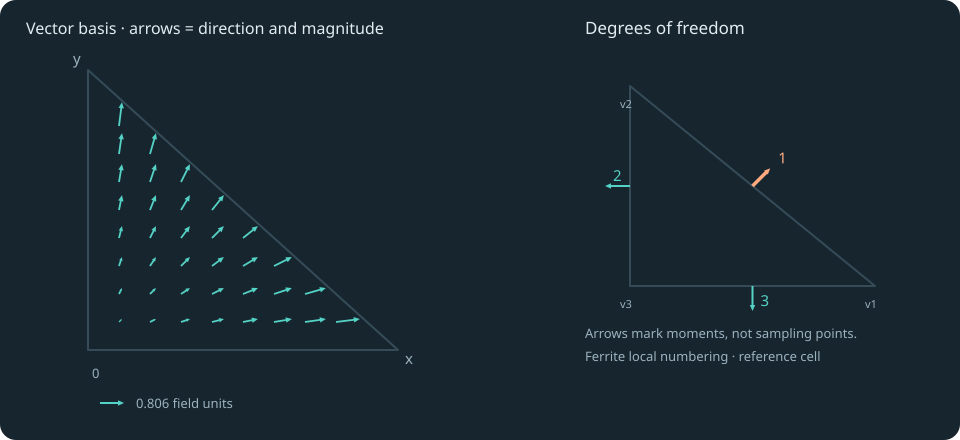
Raviart–Thomas
One outward flux integral per edge determines a vector field.
RaviartThomas{RefTriangle, 1, 2}()
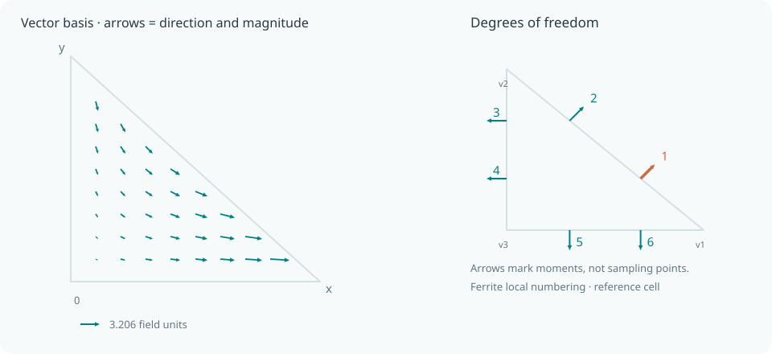
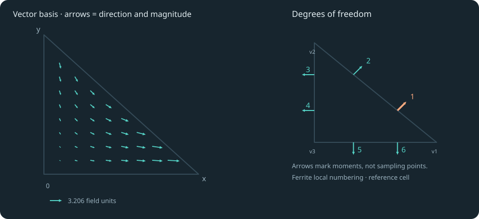
Brezzi–Douglas–Marini
Two weighted flux moments per edge determine a linear vector field.
BrezziDouglasMarini{RefTriangle, 1, 2}()


Nédélec · first kind
One oriented circulation integral per edge determines a vector field.
Nedelec{RefTriangle, 1, 2}()
How to read the atlas
A reference finite element combines a cell $\widehat K$, a finite-dimensional space $V$, and a set of linear functionals $\ell_i$. The shape functions satisfy
\[\ell_i(\varphi_j)=\delta_{ij},\qquad I_hf=\sum_i\ell_i(f)\varphi_i.\]
Each page pairs a selectable basis with its dof support and mathematical definition. Moment elements use integral functionals rather than point samples. All examples are on the reference cell.
The numerical generator checks the complete duality matrix before writing any pages. Moment weights are explicitly defined in the generator: the functional-kind API alone does not specify them.
The presentation is inspired by DefElement. All figures here are generated locally from Ferrite. See the interpolation API for the complete list of supported reference cells and orders.